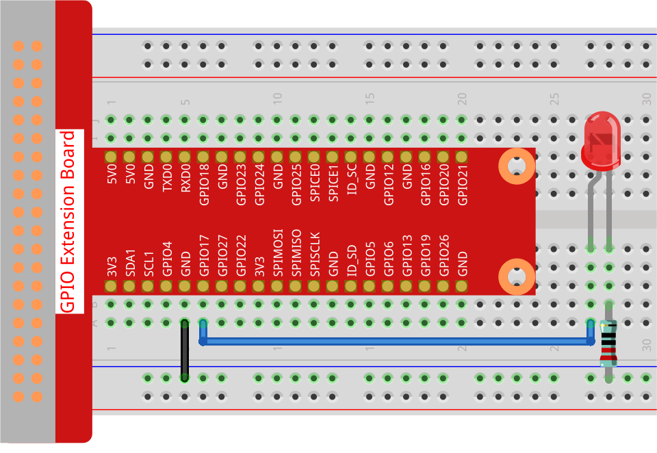

Nota
Ciao, benvenuto nella Community di Facebook dedicata agli appassionati di SunFounder Raspberry Pi, Arduino e ESP32! Approfondisci le tue conoscenze su Raspberry Pi, Arduino ed ESP32 insieme ad altri appassionati.
Perché unirsi a noi?
Supporto Esperto: Risolvi problematiche post-vendita e sfide tecniche con l’aiuto della nostra comunità e del nostro team.
Impara e Condividi: Scambia consigli e tutorial per migliorare le tue competenze.
Anteprime Esclusive: Ottieni accesso anticipato agli annunci di nuovi prodotti e alle anteprime.
Sconti Speciali: Approfitta di sconti esclusivi sui nostri prodotti più recenti.
Promozioni Festive e Giveaway: Partecipa a concorsi e promozioni speciali.
👉 Sei pronto a esplorare e creare con noi? Clicca su [Qui] e unisciti subito!
1.1.1 LED Lampeggiante
Introduzione
In questo progetto, impareremo come realizzare un LED lampeggiante tramite programmazione. Impostando i parametri, il LED potrà creare una serie di effetti interessanti. Andiamo avanti!
Componenti Necessari
Per questo progetto, avremo bisogno dei seguenti componenti.

Schema a Blocchi
In questo esperimento, colleghiamo il pin GPIO 17 del Raspberry Pi al terminale positivo (pin lungo) del LED, poi il terminale negativo (pin corto) del LED a una resistenza, e infine colleghiamo l’altro terminale della resistenza al pin GND del Raspberry Pi. Per accendere il LED, dobbiamo impostare GPIO17 su alto (3,3V). Questo fenomeno può essere ottenuto tramite programmazione.
Nota
Pin11 si riferisce all’11º pin del Raspberry Pi da sinistra a destra, e i numeri di pin BCM corrispondenti sono mostrati nella tabella seguente.
Nel contesto del linguaggio Python, BCM 17 è 17 nella colonna BCM della tabella seguente. Allo stesso tempo, corrisponde all’11º pin del Raspberry Pi, Pin 11.
T-Board Name |
physical |
BCM |
GPIO17 |
Pin 11 |
17 |
{kind=link}
Procedure Sperimentali
Passo 1: Costruisci il circuito.
{kind=link}
Passo 2: Vai nella cartella del codice e avvialo.
Se utilizzi uno schermo, ti consigliamo di seguire i seguenti passaggi.
Trova 1.1.1_BlinkingLed.py e fai doppio clic per aprirlo. Ora ti trovi nel file.
Clicca su Run ->Run Module nella finestra e apparirà il contenuto seguente.
Per interrompere l’esecuzione, clicca semplicemente sul pulsante X in alto a destra per chiudere, e tornerai al codice. Se modifichi il codice, prima di cliccare su Run Module (F5) è necessario salvarlo. Poi potrai vedere i risultati.
Se accedi al Raspberry Pi da remoto, digita il seguente comando:
cd ~/davinci-kit-for-raspberry-pi/python-pi5
Nota
Cambia la directory al percorso del codice in questo esperimento tramite cd.
Passo 3: Esegui il codice
sudo python3 1.1.1_BlinkingLed.py
Nota
Qui sudo significa eseguire come superutente, e python è utilizzato per eseguire il file con Python.
Dopo l’esecuzione del codice, vedrai il LED lampeggiare.
Passo 4: Se vuoi modificare il file di codice 1.1.1_BlinkingLed.py,
premi Ctrl + C per interrompere l’esecuzione del codice. Poi digita il seguente
comando per aprire 1.1.1_BlinkingLed.py:
nano 1.1.1_BlinkingLed.py
Nota
nano è uno strumento di editing testuale. Il comando serve per aprire il file di codice 1.1.1_BlinkingLed.py con questo strumento.
Premi Ctrl+X per uscire. Se hai modificato il codice, ci sarà un
messaggio che chiede se salvare le modifiche o meno. Digita Y (salva)
o N (non salvare).
Poi premi Enter per uscire. Digita nano 1.1.1_BlinkingLed.py di nuovo per
vedere l’effetto dopo la modifica.
Avvertimento
Se appare l’errore RuntimeError: Cannot determine SOC peripheral base address, consulta Se gpiozero non funziona.
Codice
Di seguito è riportato il codice del programma:
Nota
Puoi Modificare/Reimpostare/Copiare/Eseguire/Arrestare il codice qui sotto. Ma prima, è necessario andare al percorso del codice sorgente come davinci-kit-for-raspberry-pi/python-pi5. Dopo aver modificato il codice, puoi eseguirlo direttamente per vedere l’effetto.
#!/usr/bin/env python3
from gpiozero import LED
from time import sleep
# Inizializza un LED collegato al pin GPIO 17 utilizzando la libreria GPIO Zero.
led = LED(17)
try:
# Avvia un ciclo infinito per alternare lo stato del LED.
while True:
# Accendi il LED e stampa un messaggio sulla console.
led.on()
print('...LED ON')
# Attendi 0.5 secondi con il LED acceso.
sleep(0.5)
# Spegni il LED e stampa un messaggio sulla console.
led.off()
print('LED OFF...')
# Attendi 0.5 secondi con il LED spento.
sleep(0.5)
except KeyboardInterrupt:
# Gestisce in modo sicuro un’interruzione da tastiera (Ctrl+C) uscendo dal ciclo.
# GPIO Zero gestisce automaticamente la pulizia delle impostazioni GPIO all’uscita.
pass
Spiegazione del Codice
Quando il sistema rileva questo, cercherà il percorso di installazione di Python nelle impostazioni env, quindi chiamerà l’interprete corrispondente per completare l’operazione. Serve per evitare che l’utente non abbia installato Python sul percorso di default
/usr/bin.#!/usr/bin/env python3Queste righe importano le classi e le funzioni necessarie.
LEDdagpiozeroper il controllo del LED esleepdatimeper i ritardi.from gpiozero import LED from time import sleep
Questa riga crea un oggetto LED collegato al pin GPIO 17.
# Inizializza un LED collegato al pin GPIO 17 utilizzando la libreria GPIO Zero. led = LED(17)
Viene avviato un ciclo infinito usando
while True:. All’interno del ciclo, il LED viene acceso (led.on()) e viene stampato un messaggio. Successivamente, il programma si ferma per 0.5 secondi (sleep(0.5)). Dopo di che, il LED viene spento (led.off()), viene stampato un altro messaggio, e il programma si ferma di nuovo per 0.5 secondi.try: # Avvia un ciclo infinito per alternare lo stato del LED. while True: # Accendi il LED e stampa un messaggio sulla console. led.on() print('...LED ON') # Attendi 0.5 secondi con il LED acceso. sleep(0.5) # Spegni il LED e stampa un messaggio sulla console. led.off() print('LED OFF...') # Attendi 0.5 secondi con il LED spento. sleep(0.5)
Il blocco
exceptintercetta unKeyboardInterrupt(come la pressione di Ctrl+C) ed esce in sicurezza dal ciclo. Il comandopassviene usato come segnaposto per indicare che non viene eseguita alcuna azione specifica in caso di interruzione.except KeyboardInterrupt: # Gestisce in modo sicuro un’interruzione da tastiera (Ctrl+C) uscendo dal ciclo. # GPIO Zero gestisce automaticamente la pulizia delle impostazioni GPIO all’uscita. pass